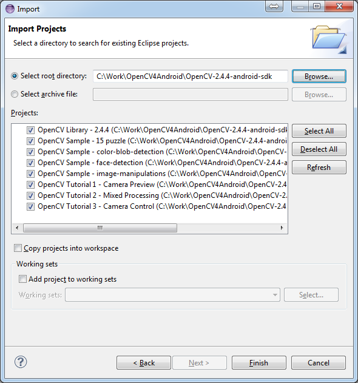
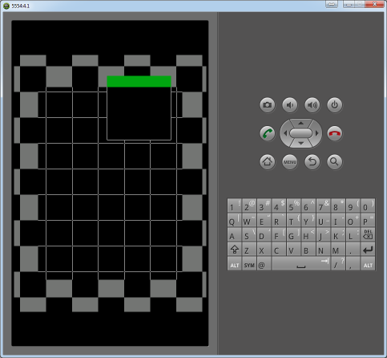

OpenCV4Android SDK
This tutorial was designed to help you with installation and configuration of OpenCV4Android SDK.
This guide was written with MS Windows 7 in mind, though it should work with GNU Linux and Apple Mac OS as well.
This tutorial assumes you have the following software installed and configured:
- JDK
- Android SDK and NDK
- Eclipse IDE
- ADT and CDT plugins for Eclipse
If you need help with anything of the above, you may refer to our Introduction into Android Development guide.
If you encounter any error after thoroughly following these steps, feel free to contact us via OpenCV4Android discussion group or OpenCV Q&A forum. We’ll do our best to help you out.
Tegra Android Development Pack users
You may have used Tegra Android Development Pack (TADP) released by NVIDIA for Android development environment setup.
Beside Android development tools the TADP 2.0 includes OpenCV4Android SDK, so it can be already installed in your system and you can skip to samples section of this tutorial.
More details regarding TADP can be found in the Introduction into Android Development guide.
General info
OpenCV4Android SDK package enables development of Android applications with use of OpenCV library.
The structure of package contents looks as follows:
OpenCV-2.4.9-android-sdk
|_ apk
| |_ OpenCV_2.4.9_binary_pack_armv7a.apk
| |_ OpenCV_2.4.9_Manager_2.18_XXX.apk
|
|_ doc
|_ samples
|_ sdk
| |_ etc
| |_ java
| |_ native
| |_ 3rdparty
| |_ jni
| |_ libs
| |_ armeabi
| |_ armeabi-v7a
| |_ x86
|
|_ LICENSE
|_ README.android
sdkfolder contains OpenCV API and libraries for Android:sdk/javafolder contains an Android library Eclipse project providing OpenCV Java API that can be imported into developer’s workspace;sdk/nativefolder contains OpenCV C++ headers (for JNI code) and native Android libraries (*.so and *.a) for ARM-v5, ARM-v7a and x86 architectures;sdk/etcfolder contains Haar and LBP cascades distributed with OpenCV.apkfolder contains Android packages that should be installed on the target Android device to enable OpenCV library access via OpenCV Manager API (see details below).On production devices that have access to Google Play Market (and Internet) these packages will be installed from Market on the first start of an application using OpenCV Manager API. But devkits without Market or Internet connection require this packages to be installed manually. Install the Manager.apk and optional binary_pack.apk if it needed. See
Manager Selectionfor details.Installation from Internet is the preferable way since OpenCV team may publish updated versions of this packages on the Market.
samplesfolder contains sample applications projects and their prebuilt packages (APK). Import them into Eclipse workspace (like described below) and browse the code to learn possible ways of OpenCV use on Android.docfolder contains various OpenCV documentation in PDF format. It’s also available online at http://docs.opencv.org. The most recent docs (nightly build) are at http://docs.opencv.org/2.4. Generally, it’s more up-to-date, but can refer to not-yet-released functionality.Todo I’m not sure that this is the best place to talk about OpenCV Manager
Starting from version 2.4.3 OpenCV4Android SDK uses OpenCV Manager API for library initialization. OpenCV Manager is an Android service based solution providing the following benefits for OpenCV applications developers:
- Compact apk-size, since all applications use the same binaries from Manager and do not store native libs within themselves;
- Hardware specific optimizations are automatically enabled on all supported platforms;
- Automatic updates and bug fixes;
- Trusted OpenCV library source. All packages with OpenCV are published on Google Play;
For additional information on OpenCV Manager see the:
Manual OpenCV4Android SDK setup
Get the OpenCV4Android SDK
Go to the OpenCV download page on SourceForge and download the latest available version. Currently it’s OpenCV-2.4.9-android-sdk.zip.
Create a new folder for Android with OpenCV development. For this tutorial we have unpacked OpenCV SDK to the
C:\Work\OpenCV4Android\directory.Better to use a path without spaces in it. Otherwise you may have problems with ndk-build.
Unpack the SDK archive into the chosen directory.
You can unpack it using any popular archiver (e.g with 7-Zip):

On Unix you can use the following command:
unzip ~/Downloads/OpenCV-2.4.9-android-sdk.zip
Import OpenCV library and samples to the Eclipse
Start Eclipse and choose your workspace location.
We recommend to start working with OpenCV for Android from a new clean workspace. A new Eclipse workspace can for example be created in the folder where you have unpacked OpenCV4Android SDK package:

Import OpenCV library and samples into workspace.
OpenCV library is packed as a ready-for-use Android Library Project. You can simply reference it in your projects.
Each sample included into the
OpenCV-2.4.9-android-sdk.zipis a regular Android project that already references OpenCV library. Follow the steps below to import OpenCV and samples into the workspace:Right click on the Package Explorer window and choose Import… option from the context menu:

In the main panel select General> Existing Projects into Workspace and press Next button:

In the Select root directory field locate your OpenCV package folder. Eclipse should automatically locate OpenCV library and samples:
Click Finish button to complete the import operation.
OpenCV samples are indeed dependent on OpenCV library project so don’t forget to import it to your workspace as well.
After clicking Finish button Eclipse will load all selected projects into workspace, and you have to wait some time while it is building OpenCV samples. Just give a minute to Eclipse to complete initialization.

Once Eclipse completes build you will have the clean workspace without any build errors:

Running OpenCV Samples
At this point you should be able to build and run the samples. Keep in mind, that face-detection and Tutorial 2 - Mixed Processing include some native code and require Android NDK and NDK/CDT plugin for Eclipse to build working applications. If you haven’t installed these tools, see the corresponding section of Introduction into Android Development.
warning
Please consider that some samples use Android Java Camera API, which is accessible with an AVD.
Recent *Android SDK tools, revision 19+* can run ARM v7a OS images but they available not for all Android versions.
Well, running samples from Eclipse is very simple:
Connect your device with adb tool from Android SDK or create an emulator with camera support.
- See Managing Virtual Devices document for help with Android Emulator.
- See Using Hardware Devices for help with real devices (not emulators).
Select project you want to start in Package Explorer and just press Ctrl + F11 or select option Run> Run from the main menu, or click Run button on the toolbar.
Android Emulator can take several minutes to start. So, please, be patient. * On the first run Eclipse will ask you about the running mode for your application:

Select the Android Application option and click OK button. Eclipse will install and run the sample.
Chances are that on the first launch you will not have the OpenCV Manager package installed. In this case you will see the following message:

To get rid of the message you will need to install OpenCV Manager and the appropriate OpenCV binary pack. Simply tap Yes if you have Google Play Market installed on your device/emulator. It will redirect you to the corresponding page on Google Play Market.
If you have no access to the Market, which is often the case with emulators - you will need to install the packages from OpenCV4Android SDK folder manually. See
Manager Selectionfor details.<Android SDK path>/platform-tools/adb install <OpenCV4Android SDK path>/apk/OpenCV_2.4.9_Manager_2.18_armv7a-neon.apk
armeabi, armv7a-neon, arm7a-neon-android8, mips and x86 stand for platform targets:
- armeabi is for ARM v5 and ARM v6 architectures with Android API 8+,
- armv7a-neon is for NEON-optimized ARM v7 with Android API 9+,
- arm7a-neon-android8 is for NEON-optimized ARM v7 with Android API 8,
- mips is for MIPS architecture with Android API 9+,
- x86 is for Intel x86 CPUs with Android API 9+.
If using hardware device for testing/debugging, run the following command to learn its CPU architecture:
adb shell getprop ro.product.cpu.abi
If you’re using an AVD emulator, go Window > AVD Manager to see the list of availible devices. Click Edit in the context menu of the selected device. In the window, which then pop-ups, find the CPU field.
You may also see section
Manager Selectionfor details.When done, you will be able to run OpenCV samples on your device/emulator seamlessly.
Here is Sample - image-manipulations sample, running on top of stock camera-preview of the emulator.

What’s next
Now, when you have your instance of OpenCV4Adroid SDK set up and configured, you may want to proceed to using OpenCV in your own application. You can learn how to do that in a separate Android Development with OpenCV tutorial.